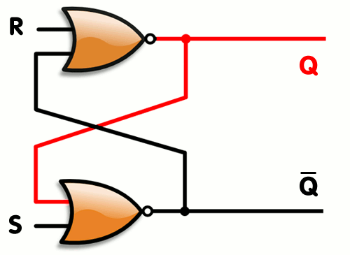
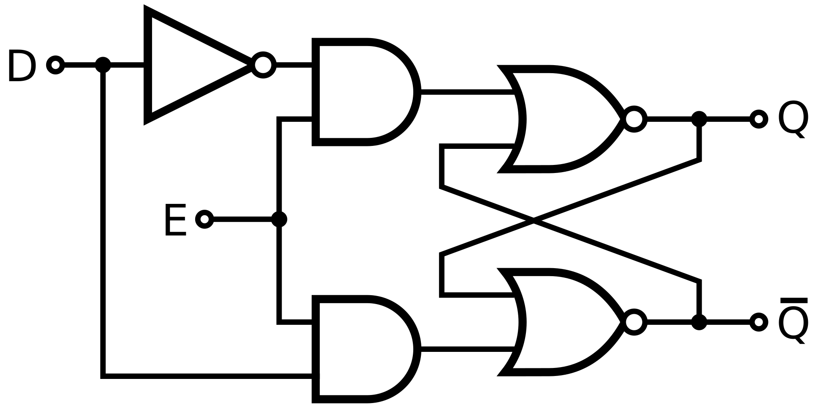
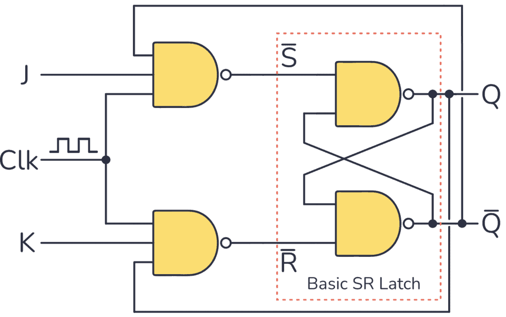
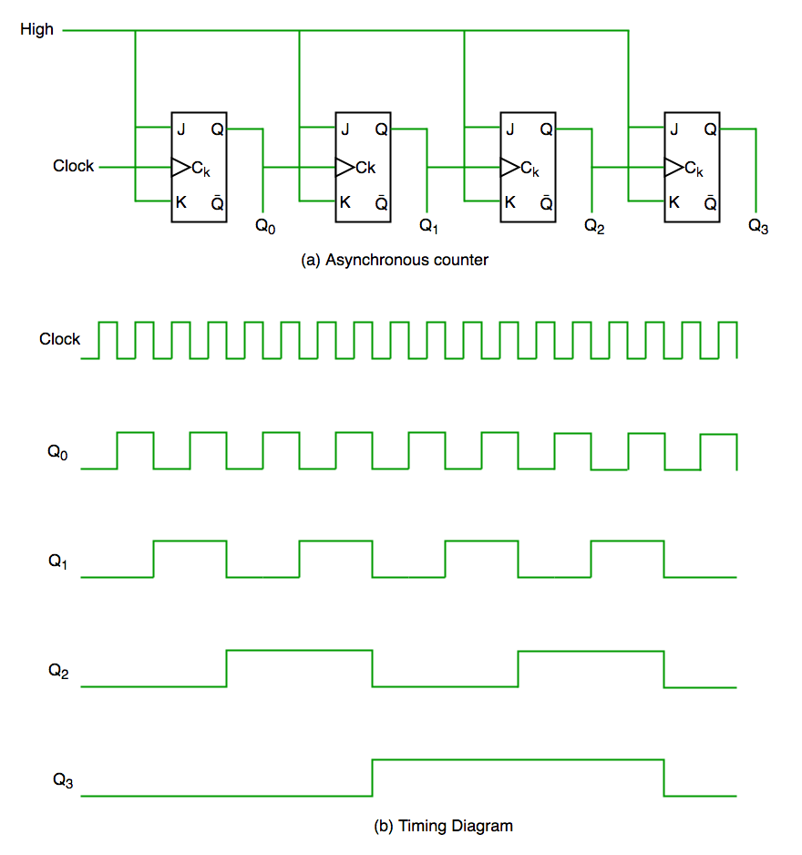

\(Q\) shows \(1\), its inverse, \(\overline{Q}\) shows \(0\).
To reset, apply a pulse to \(R\).
\(Q\) set to \(0\) and \(\overline{Q}\) set to \(1\).
To set the latch, apply a pulse to \(S\).
\(Q\) is set \(1\) and \(\overline{Q}\) set to \(0\).
Applying a pulse to both \(Q\) and \(R\) is not valid.
A high voltage needs to be applied to both \(\overline{S}\) and \(\overline{R}\).
A pulse of low voltage will cause the state to change.
It is called an active low SR-latch.
We may only want the state to change if the latch is enabled.
This can be done by building a gated latch.
Recall that an AND gate is only true when both inputs are true.
So we add AND gates, creating another input, \(E\).
Latches are widely used in electrical engineering as well as electronic computers.
When a mechanical switch is pressed, it may cause several pulses to be sent.
An SR-latch ensures that only one signal is sent, since subsequent pulses to \(S\) or \(R\) will not cause a change in state.
0Data or transparent latches have two inputs: Data (\(D\)) and Enable (\(E\)).
The state changes to the value of \(D\) only when \(E\) signal is high.
When the Enable signal is low, the value of \(D\) is stored until the leading edge of the next rising Enable Signal.

Latches are inexpensive and easy to implement using simple logic components. 2
However, their behaviour can be unpredictable owing to a lack of synchronisation.
Flip-flops add a clack to synchronise their operaton.
A gated latch can be converted into a flip-flop by connecting a clock to the Enable input.
The JK flip-flop has the same behaviour as an SR-flip flop:
If a high pulse is sent to both \(J\) and \(K\), then the state is toggled.
I.e., \(0\) becomes \(1\) and \(1\) becomes \(0\).

We will use this latch shortly to build a counter.
We saw that digital circuits have two possible values: low (or \(0\)) and high (or \(1\)).
Everything (letters, images, sounds, programs) in a computer is represented by a number.
Numbers are encoded in binary using a certain number of binary digits (bits).
A whole (integer) number is typically represented using \(8\) bits (a byte).
E.g., for unsigned (\(\ge 0\)) integers, \(0 = 00000000\), \(37 = 00100101\).
We can build a counter, using JK flip-flops, which increments an integer represented by \(4\) bits (half a byte; a nibble).
Start by adding one Push button as input and one 4-bit digit as the output.
The counter should start at \(0\) and increase by \(1\) each time the button is pushed.

Computer architecture overview